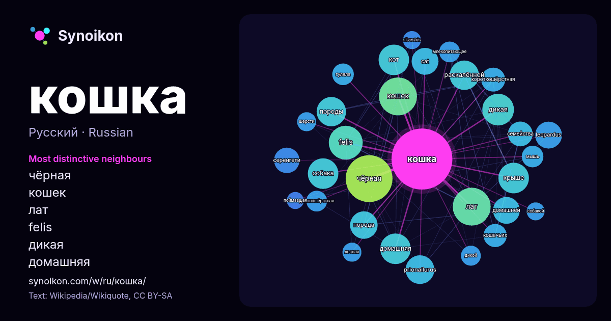

Русский · популярное слово
кошка
“cat” · Слова вокруг него в 1114 вхождениях из Википедии, Wikiquote.

Самые характерные соседи
- чёрная 54×
- кошек 39×
- лат 39×
- felis 33×
- дикая 28×
- домашняя 26×
- кот 26×
- крыше 26×
- собака 25×
- раскалённой 25×
- prionailurus 24×
- породы 22×
- leopardus 21×
- порода 21×
- cat 21×
- домашней 19×
- серенгети 19×
- короткошёрстная 17×
- кошачьих 16×
- гуляла 14×
× = во сколько раз чаще, чем в обычном тексте Википедии.
Самые частые соседи
- чёрная 61
- кошек 40
- лат 40
- felis 32
- дикая 28
- домашняя 26
- кот 26
- крыше 26
- собака 26
- породы 24
- раскалённой 24
- prionailurus 23
- порода 21
- cat 20
- leopardus 20
- домашней 20
- серенгети 18
- семейства 17
- фильм 17
- короткошёрстная 16
В контексте
- перестаёт биться. Кошка в засаде Кошка, поймавшая дятла Кошка, поймавшая мышь Кошка после охоты Кошка в засаде на дереве В домашних условиях кошки любят играть Wikipedia snippets · Кошка
- Сиби́рская кошка — порода полудлинношёрстных кошек. Сибирская кошка имеет полудлинную густую шерсть, не пропускающую влагу, уши среднего размера, пушистый Wikipedia snippets · Сибирская кошка
- Бенгальская кошка, бенгал — межродовой гибрид домашней кошки (Felis catus) и собственно бенгальской кошки (Prionailurus bengalensis). История породы началась Wikipedia snippets · Бенгальская кошка (домашняя)
- пунктам. В идеале, это яркая кошка с отчётливым тикингом на шерсти, средних размеров, королевской внешности. Абиссинская кошка гибкая, крепкая, мускулистая Wikipedia snippets · Абиссинская кошка
- «Дикая кошка» перенаправляются сюда; см. также другие значения терминов Дикий Кот и Дикая кошка. Лесно́й кот, или лесна́я ко́шка, или ди́кая ко́шка, или Wikipedia snippets · Лесной кот
- Невская маскарадная кошка — длинношёрстная порода, имеющая пойнтовый окрас, придающий ей сходство с сиамской или тайской кошкой, и голубые яркие глаза Wikipedia snippets · Невская маскарадная кошка
- преследования Человеком-пауком Кошку, они определили что Человек-паук и Чёрная кошка были сообщниками. После этого Чёрная кошка назначила Человеку-пауку встречу Wikipedia snippets · Чёрная кошка (Marvel Comics)
- рода Кошки (лат. Felis) и некоторых других родов семейства кошачьих. Кошка — упразднённое созвездие. Якорь-кошка — многолапый якорь. Абордажная кошка — штурмовой Wikipedia snippets · Кошка (значения)
Другие слова
- бог
- власть
- вода
- деньги
- жизнь
- здоровье
- золото
- искусство
- истина
- история
- климат
- мост
- наука
- пища
- поезд
- природа
- работа
- семья
- сердце
- смерть
- собака
- язык
Предварительно рассчитано 2026-10-09 с настройками по умолчанию (±5 слов, средний корпус). Интерактивная карта может обновить данные в реальном времени.
Интерфейс переведён машинно; исправления приветствуются.